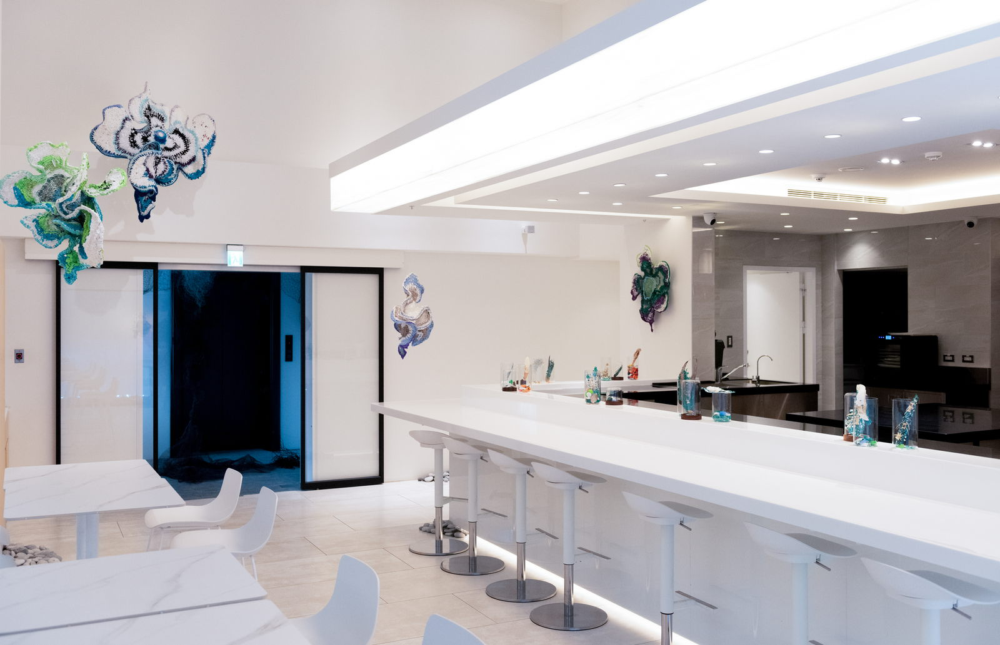
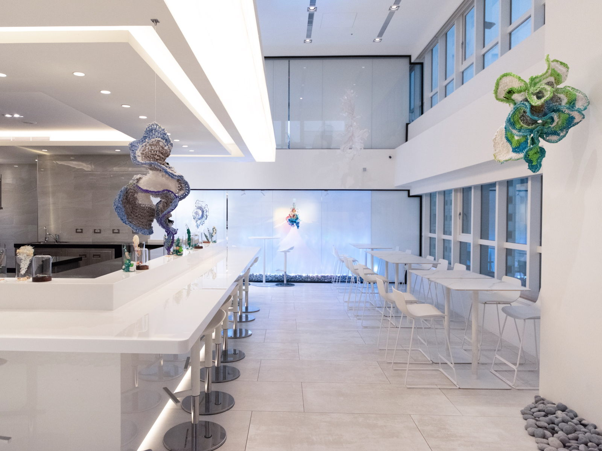
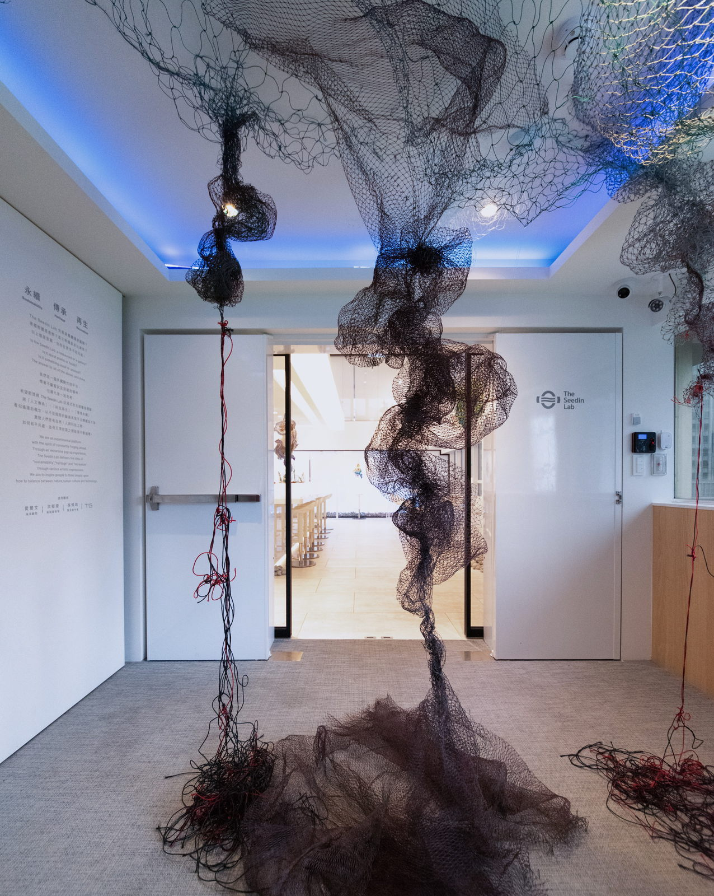
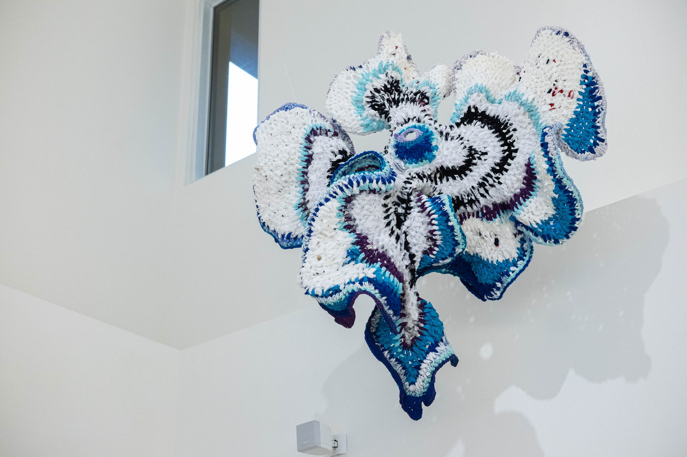
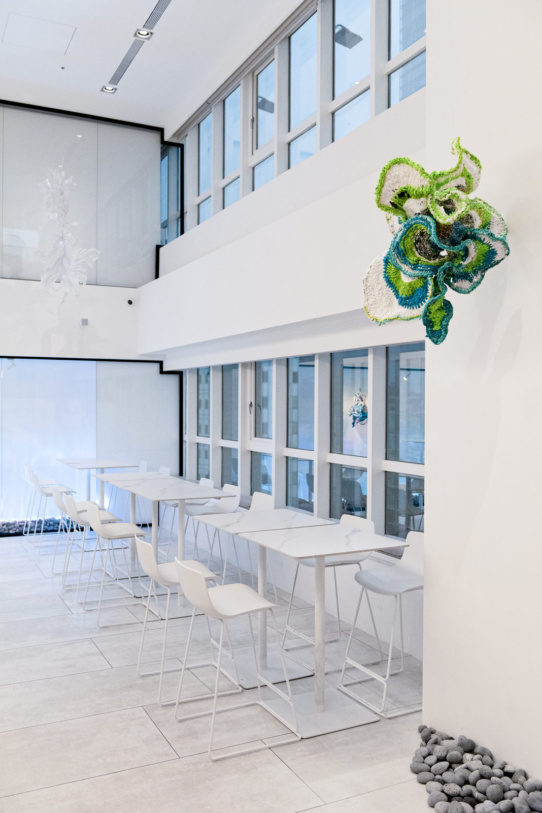

Artist Julia Hung reexamines the social and environmental issues under consumerism. She created her artwork with post-consumer wastes, to look into the ocean theme and raise questions.
<Biomimicry>
Hung questions the concept of value under consumerism, and believes everything has its purpose and value in nature. By repurposing artificial media - post-consumer wastes, into organic shapes imitating natural forms, perhaps the way of nature could be further examined and learned.
Hung cuts used plastic package into strips and wraps them around metal wire to create a bony structure with gradient colors. The semitransparent part is ironed with layers of transparent plastic bags to harden with thickness. A thin resin coating is then added to further strengthen the suspended sculpture. The organic floaty shapes are opened for interpretation.
Debris series
Julia Hung believes the word ‘debris’ doesn’t have any positive or negative annotation. Everything would eventually become debris. What kind of influence and debris would human leave behind this world?
Fishnet installation
From the entrance, used fishnet extends from the ceiling to the floor and makes it uneasy to enter the venue. This is meant for viewers to rethink the inconvenience human beings have brought to the ecosystem. The organic shape of the fishnet seems like ink dripping into water or smoke rising to the air, implying industrial pollutions affecting the environment. Fishnet also associates with trap, and Hung wonder whether human beings are also trapped under consumerism without noticing.
Woven pieces
Hung crochets post-consumer wastes into organic shapes that abstractly resemble sea creatures. The vivid colors are alternated with blocks of white to represent the phenomena of coral bleaching. At the same time, to re-examine how human beings are affected by today’s standardized culture and losing our own unique colors. The artificial material of used PET bottle, plastic bag, and clothing are cut into strips and then crocheted into a sculpture without any adhesive. Hung learns the crocheting technique from her grandmother when she was little. The crocheting process is also healing and meditative for the artist. To echo the Debris theme, The artist leaves the buttons and labels from the old clothing to let them appear on the sculpture to showcase the material and the emotional connection with human.
Fossils
The last but not the least, Hung presents daily post-consumer waste - fish bone, shell, and PET bottles caps as fossils, to ask what we are leaving behind for our future generation, and perhaps it is still possible to change.